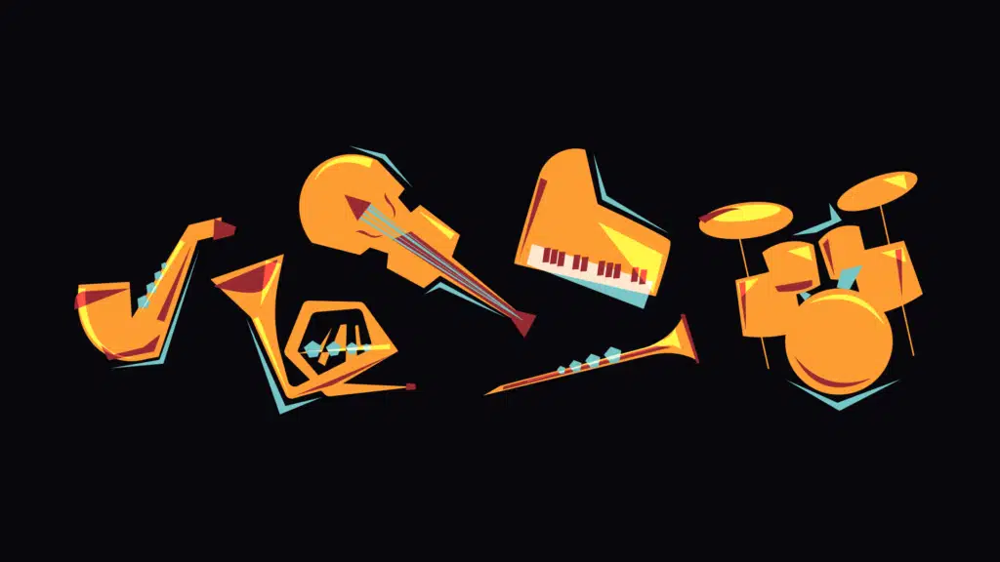
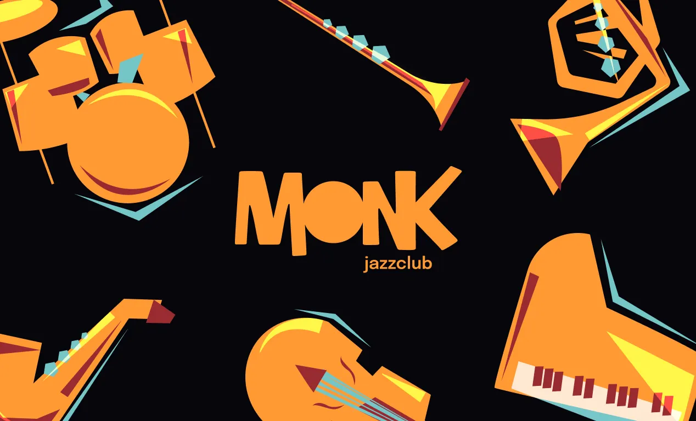
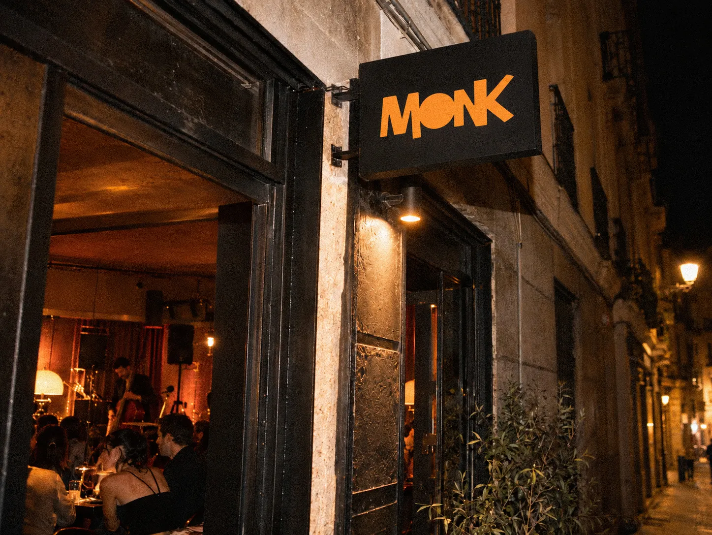
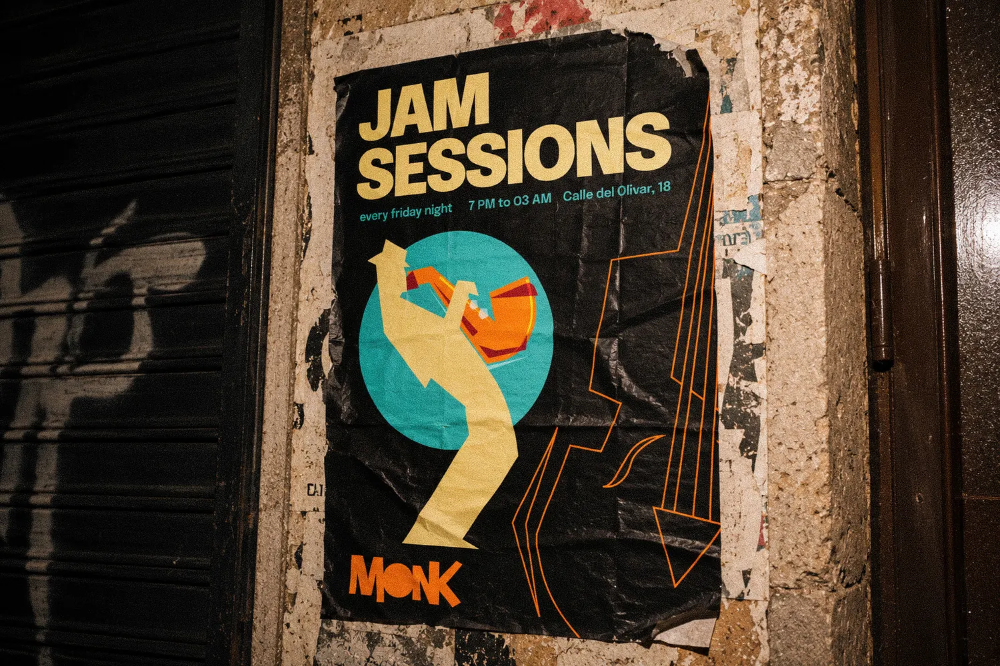
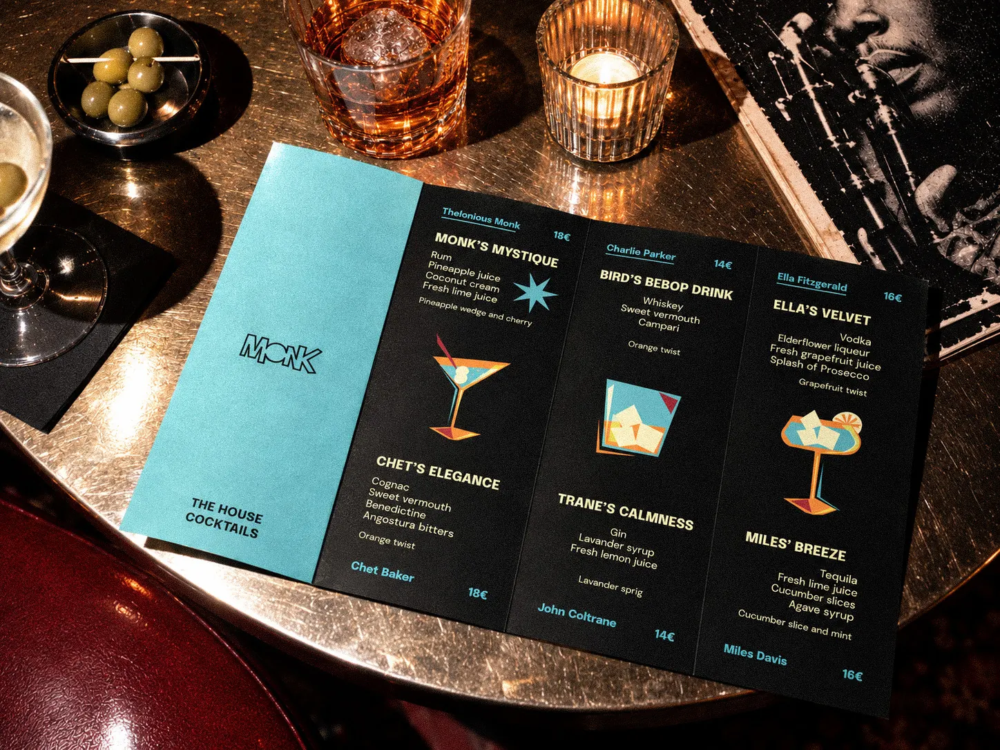
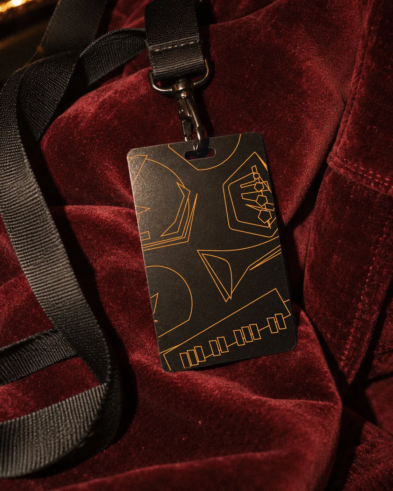
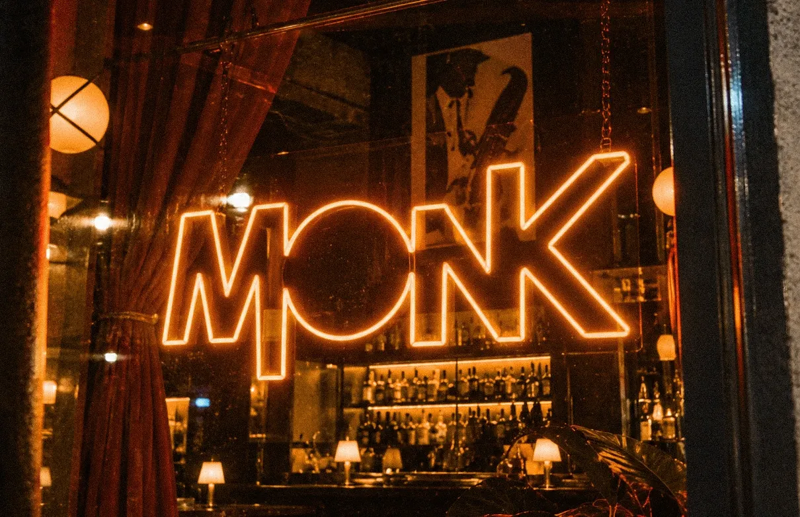
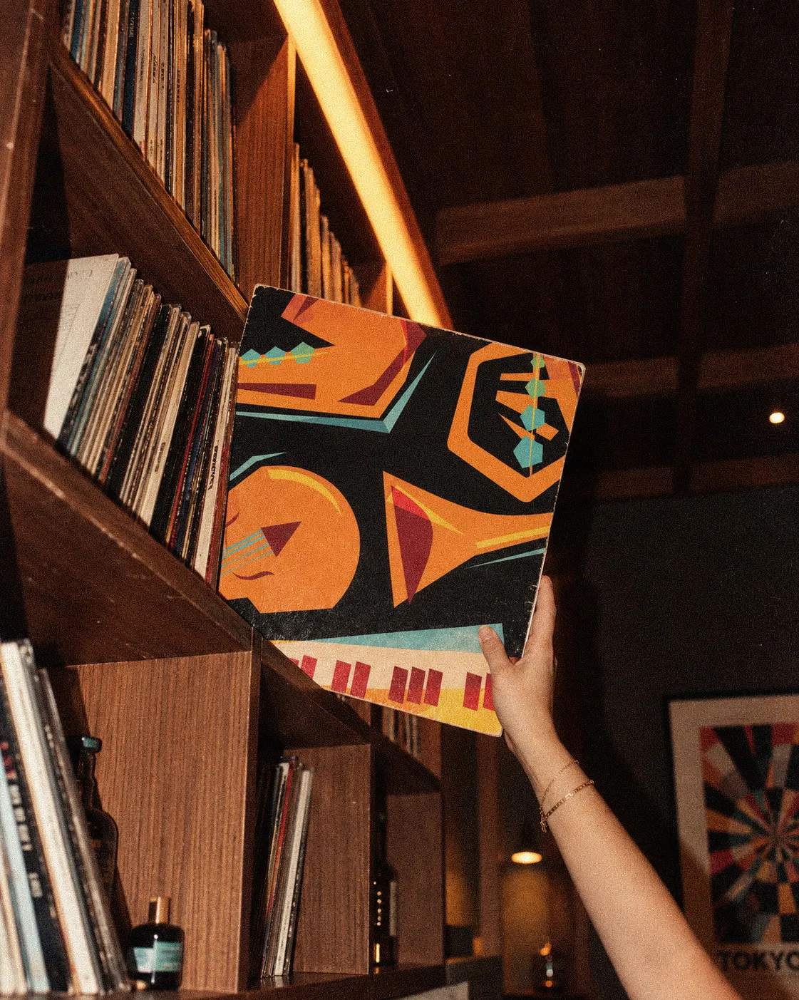
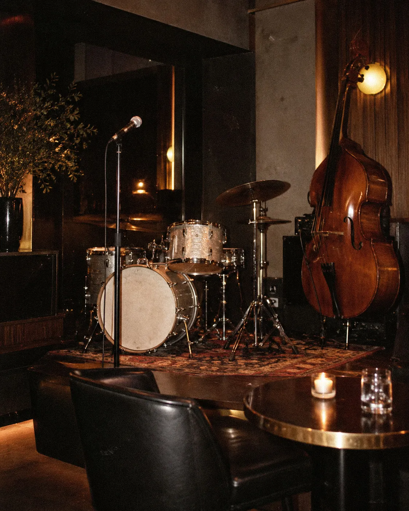
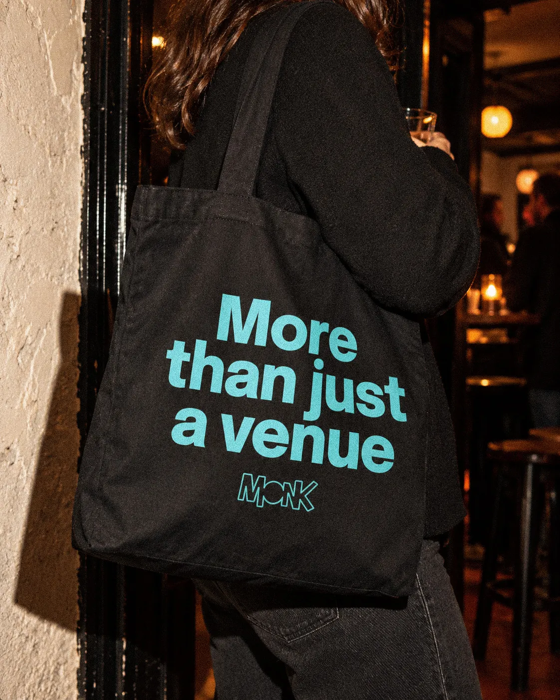

MONK
05 / 05Brand identity / Illustration · 2024
- Collaborative project
- Original illustrations (my work)
- Visual identity (team collaboration)
- Portfolio imagery (later, independent work)
2024 group project. I created all original illustrations and collaborated on the identity. All portfolio photographs and mockups were produced independently by me later.
THE CHALLENGE
MONK was a group project developed in 2024: the visual identity for an imagined jazz club in Lavapiés, Madrid. The idea was to bring different generations together through live jazz, in a welcoming space with a contemporary personality.
Our challenge was to create an expressive and recognisable identity that could carry that idea across the club’s communication, from printed pieces to digital formats.








THE PROCESS
Within the team, I was responsible for creating all of MONK’s original illustrations. I drew the instruments, musicians and cocktail illustrations, developing a colourful, geometric graphic language that could bring rhythm and personality to the brand.
I also collaborated on the wider visual identity, helping the team apply this illustration system consistently across the different touchpoints while keeping a playful but coherent character.







THE OUTCOME
Together, we developed a full identity with posters, stationery, a drinks menu, a vinyl sleeve, social media content and a landing-page concept.
The photographs, mockups and presentation images shown on this page were created independently by me after the original 2024 group project, to revisit the work and show how the identity could live in a real jazz-club environment.






